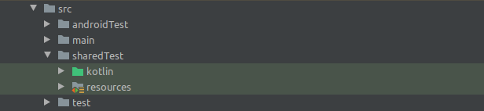

Testes são extremamente importantes para o processo de desenvolvimento de Apps uma vez que, com eles, podemos antecipar problemas e validar o comportamento do nosso código, aumentando assim a confiança das nossas entregas. No Android temos três tipos de teste que podem ser definidos da seguinte forma:

- Unitários: Execução rápida, rodam local de forma simples porém possuem baixa confiança por não testarem componentes de UI;
- Integração: Execução média, rodam local utilizando um sandbox que emule o framework Android (Robolectric) e média confiança, uma vez que são testes que envolvem componentes de UI mas não rodam em um emulador de fato;
- UI: Lenta execução, é necessário rodar em um Emulador (Espresso) e alta confiança por simularem de forma mais completa o comportamento de um usuário ao interagir com um componente de UI do nosso App.
A combinação desses tipos faz com que sua suíte de teste se torne mais robusta, deixando sua base de código mais confiável e fácil de manter. Num cenário ideal, durante o ciclo de desenvolvimento de uma feature, você rodaria os testes Unitários e de Integração frequentemente e os de UI ao final desse ciclo. Porém, nesse cenário, surgem dois problemas:
- Os testes de Integração e UI costumam ter o mesmo propósito, porém o idioma utilizado na escrita dos testes e o ambiente de execução é diferente, criando assim uma duplicação de código;
- Caso o projeto utilize alguma ferramenta de CI, o que é muito comum, para rodar os testes de UI é desejável que seja utilizada uma device farm, como o Firebase Test Lab.
Mas e aí, como resolvemos esses problemas? Neste Codelab você vai aprender como configurar o seu projeto para ter uma pasta de testes compartilhados, onde serão criados testes de Integração e UI, utilizando apenas um idioma para ambos.
Criando a pastas de sharedTests
No arquivo build.gradle do seu módulo, dentro do bloco android, vamos adicionar sharedTest como um nova pasta de testes e uma pasta de resources para guardar a configuração do Robolectric.
android {
...
sourceSets {
String sharedTestDir = 'src/sharedTest/java'
String sharedResourceDir = 'src/sharedTest/resources'
test {
java.srcDirs sharedTestDir
resources.srcDirs sharedResourceDir
}
androidTest {
java.srcDirs sharedTestDir
resources.srcDirs sharedResourceDir
}
}
}
Essa configuração é necessária para que nossa pasta sharedTest seja reconhecida como válida para conter testes que vão ser rodados locais e no emulador.
Incluindo resources do Android
Como utilizaremos o Robolectric para nossos testes de Integração, é necessário incluir a seguinte opção, para que o mesmos possam interagir com o framework Android:
android {
...
testOptions {
unitTests.includeAndroidResources = true
}
}
Adicionando dependências
Vamos adicionar as dependências de testes, dentro do nosso bloco dependencies, tanto como testImplementation quanto androidTestImplementation, para garantir que teremos as referências necessárias para rodar nos dois ambientes. Vale ressaltar que a dependência do Robolectric não será adicionada como androidTestImplementation, uma vez que a mesma não é necessária para esse ambiente, além de causar problemas na hora do rodar os testes no emulador.
dependencies {
testImplementation 'junit:junit:4.13.1'
testImplementation 'androidx.test:core:1.3.0'
testImplementation "androidx.test:runner:1.3.0"
testImplementation 'androidx.test:rules:1.3.0'
testImplementation "androidx.test.espresso:espresso-core:3.3.0"
testImplementation "androidx.test.espresso:espresso-contrib:3.3.0"
testImplementation "androidx.test.ext:junit:1.1.2"
testImplementation "org.robolectric:robolectric:4.4"
androidTestImplementation 'junit:junit:4.13.1'
androidTestImplementation 'androidx.test:core:1.3.0'
androidTestImplementation "androidx.test:runner:1.3.0"
androidTestImplementation 'androidx.test:rules:1.3.0'
androidTestImplementation "androidx.test.espresso:espresso-core:3.3.0"
androidTestImplementation "androidx.test.espresso:espresso-contrib:3.3.0"
androidTestImplementation "androidx.test.ext:junit:1.1.2"
}
Com isso, concluímos as configurações necessárias do projeto. No próximo passo, vamos ver como escrever nossos testes.
Criar pastas sharedTest e resources
Definimos no passo anterior duas pastas para serem utilizados: sharedTest e resources, porém ainda não fizemos a criação das mesmas. Para criá-las, basta clicar com o botão direito na pasta src, localizada dentro da sua pasta app, e criar as duas pastas. Após esse processo, seu projeto deve estar assim:

Configurando o Robolectric
Por enquanto, o Robolectric não suporta a API 30 do Android. Além disso, para dar suporte a API 29, é necessário habilitar o Java 9 no projeto, o que não é desejável. Vamos criar dentro da pasta resources um arquivo chamado robolectric.properties, para definir a API que vamos utilizar em todos os nossos testes. O conteúdo do arquivo ficaria assim:
sdk=28
Runner
Vamos começar pelo Runner que vamos utilizar. É muito importante utilizar o AndroidJUnit4 pois o mesmo já está preparado para delegar para a classe de Runner mais apropriada para o ambiente que estivermos executando nossos testes.
@RunWith(AndroidJUnit4::class)
class MainActivityTest {
...
}
Escrevendo os testes
Já os testes em si, vamos criá-los como se estivessemos fazendo testes de UI. Isso é possível pois, desde a versão 4.0 do Robolectric, foi adicionado suporte tanto a ActivityScenario, responsável por iniciar Activities durante os testes, tanto como expressões de validação utilizadas no Espresso. Logo, nossos testes ficariam assim:
@RunWith(AndroidJUnit4::class)
class MainActivityTest {
@Test
fun checkHelloWorldDisplayed() {
ActivityScenario.launch(MainActivityActivity::class.java)
onView(withText("Hello World!")).check(matches(isDisplayed()))
}
}
E pronto, terminamos de escrever nosso teste de exemplo. Aposto que a primeira coisa que passa na sua cabeça é executar o teste né? Se executarmos o teste agora ele será executado no Emulador. Mas como eu faço pra rodar ele localmente? Vamos ver isso no próximo passo
Muito provavelmente seu projeto deve estar integrado com uma CI que já vai rodar os testes para você porém, caso você queira rodá-los manualmente, é só executar essas tasks:
Locais (JUnit + Robolectric)
./gradlew :app:testDebugUnitTest
Instrumentados (Emulador)
./gradlew :app:connectedDebugAndroidTest
Chegamos ao fim desse Codelab! Nele discutimos sobre algumas boas práticas de teste, os benefícios de ter uma suíte de testes diversa e como implementar, através de um "hack", testes tanto de Integração como de UI através da pasta "sharedTests". Ainda está com dúvida ou quer explorar melhor a implementação? Só acessar esse repositório!